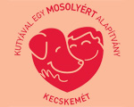
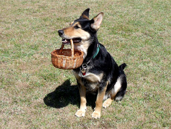
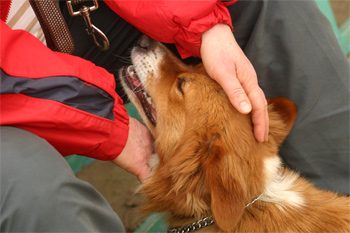
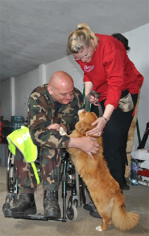
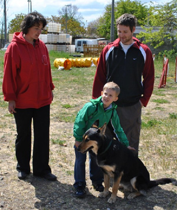

Kutyásterápia
Letöltés

„A kutyát kimondottan a gyermekek számára teremtették. Nincs párja a csintalankodásban.”
Henry Ward Beecher
Állatasszisztált terápia
Az állat-asszisztált terápiát, mint módszert B. Levinson, amerikai pszichológus dolgozta ki az 1960-as években, először érzelmileg zavart, illetve árva gyerekek gyógyítására. A módszert később kiterjesztette súlyos, gyógyíthatatlan betegek segítésére (enyhítette a depressziót), illetve idősekre, akiknél az egyedüllét és magány miatti szellemi és fizikai leépülést tudta gátolni illetve lassítani az állatterápia segítségével.
Állatasszisztált foglalkozásnak nevezzük azokat a programokat, melyek során egy vagy több állat társaságában látogatunk meg egészséges vagy beteg embereket (lehet egyéni vagy csoportos látogatás).
A foglalkozás elsődleges célja, hogy mindenki jól érezze magát, ennek érdekében a konkrét program és időtartam a pillanatnyi igényeknek megfelelően változtatható.
Jó példa az állatasszisztált terápiára az idősotthonokban tett rendszeres látogatás, melyek során a legfőbb cél: kellemes, szórakoztató, vidám perceket szerezni a lakóknak.
Az állatasszisztált terápia a foglalkozások azon csoportját jelöli, amikor egy betegcsoporttal előre rögzített feltételekkel és időtartamig dolgozunk úgy, hogy az állattal való gyakorlatok szerves részét képezik az adott betegcsoport terapeutája által kidolgozott terápiás tervnek.
Ilyen lehet például egy logopédus vezetésével zajló beszédfejlesztő program, ahol a kutya a gyakorlás és feladatmegoldás során jelenlétével motivál, illetve enyhíti a szorongást.
Miért jó a kutya terápiás foglalkozásokhoz?
A kutyának jó az alkalmazkodó képessége, így szoros ember-kutya kapcsolat alakítható ki, könnyen taníthatóak, és igényük van a foglalkozásra. A kutya gyorsan megtanulja az emberi testbeszédet, képes felvenni a szemkontaktust.
Jó a nem-verbális kommunikációjuk, tudják olvasni a viselkedést.
Könnyen szocializálható, mivel igénye van a „valakihez tartozáshoz” és ezért alkalmazkodik a szociális szabályokhoz.
A kutyás terápia típusai
- AAA (animal assisted activity):
Állat-asszisztált aktivitás, melynek lényege a foglakozásokon résztvevő személyek életminőségének növelése, melynek során általános célokat jelölnek ki és a fejlődést nem követik nyomon. A program általában spontán módon alakul.
Ez tulajdonképpen egy látogató program. Itt a kutya ugyan jelen van, de nem történik konkrét fejlesztés. Nincs konkrét fejlesztési cél, konkrét célcsoport. A kutya jelenlétének „csak” jótékony hatását használjuk ki. A kutya selymes szőrének simogatása, önzetlen szeretete, a rendszeresen járó állatok mind sokat jelentenek pl.: az idős embereknek. Mindamellett, hogy a felvezetőkkel beszélgethet, mely már magában is egy mentálhigiénés foglalkozás. A beszélgetés nem csak a kutyáról szólhat, de a kutyán keresztül indulhat el.
Általános célok:
- egyes résztvevők zárkózottságának, elszigetelődésének csökkentése,
- pozitív kapcsolat kialakítása kutya és a foglalkozásokon résztvevők között,
- a feladatokban való részvétel igényének erősítése a kutya részvételével,
- kapcsolatteremtés képességének fejlesztése a kutyával, emberekkel (társakkal és idegen személyekkel egyaránt) - szociális képességek fejlesztése,
- a kutyák viselkedésének megértése, emberi viselkedéssel való összehasonlítása,
- egyes résztvevők állattal kapcsolatos félelmeik és ellenérzéseik csökkentése,
- érzelmi beleérzőképesség, empátia, mások érzelmeinek változására való figyelés
fejlesztése,
- kommunikációs képesség fejlesztése,
- az állat jelenlétében fellépő vagy más okokra visszavezethető stressz csökkentése.
Törekszünk arra, hogy a közösen eltöltött idő minden esetben hasznos és kellemes legyen mindenki számára. A feladatok megoldásán keresztül minél több sikerélményben legyen részük, örömük a játékban. Fontos, hogy a kutyával való kapcsolat során ismereteket szerezzenek a kutya viselkedéséről, életmódjáról, gondozásáról de figyelmet fordítunk arra is, hogy eközben a résztvevőnek reális képe alakuljon ki önmagáról, személyisége fejlődjön.
- AAT (animal assisted therapy):
Állat-asszisztált terápia, mely során már kitűzött célok szerint szervezik a foglalkozásokat és a fejlődést nyomon követik.
Konkrét terápia, rehabilitáció, fejlesztés. Meghatározott a fejlesztendő terület. Van fejlesztési cél, konkrét a célcsoport. Meghatározottak a terápiás keretek. Itt a kutya, mint motivációs társ van jelen. A fő hangsúly a kutya munkáján van. A kutya kellő képzettséggel és rutinnal képes arra, hogy bizonyos szituációkat a felvezető segítsége nélkül is oldjon meg. Ez egy igen nehéz területe ennek a munkának.
Feladatok:
- A megelőzés (prevenció), a gyógyítás (korrekció), a képességfejlesztés, a nevelés, valamint az életminőség javítása.
- A fogyatékosságból eredő hátrányok csökkentése, kompenzációja.
- Pszichés funkciók / érzékelés, észlelés, emlékezet, figyelem, gondolkodás/ fejlesztése.
- Motoros funkciók fejlesztése: nagy mozgások, finommozgások koordinációja, helytelen mozgások korrekciója, adekvát mozgások kialakítása, tartási hibák csökkentése, egyensúlyérzék, ütem- ritmusérzék fejlesztése.
- Az érzelmi-, akarati élet, a viselkedés, a magatartás, a cselekvés pozitív irányú befolyásolása.
- Önállóságra való nevelés.
- A célcsoport életkorának megfelelő fegyelem, kitartás céltudatosság, felelősségérzet, a kötelességtudat kialakítása.
3. AAE (animal assisted education):
Az állat asszisztált pedagógiában is túlnyomórészt kutyát alkalmaznak motivációs társként, mert az állatnak óvodában, iskolában kell dolgoznia és nem „csak” simogatás céljából viszik be az intézetbe. A kutyát a legkönnyebb megtanítani különböző feladatokra, hiszen mind az óvodai-, mind az iskolai foglalkozásokba, órákba bevonható a négylábú, ezzel is megkedveltetve a különböző órákat, foglalkozásokat a gyermekekkel. Magyarországon is már több alapítványnak vannak iskola, illetve óvoda programjai.
A kutyás foglalkozások fő ereje
„A játékmotívumot, amely fontos az emberi természetben, a művelődés érdekében kell mozgósítani. Az oktatásnak szoros kapcsolatban kell lennie azzal, amit a gyermek szeret csinálni, amire kíváncsi.” (Hall, 1881)
A kutyás terápia motiváló ereje:
- kutya: a gyermekek többsége vonzódik az állatokhoz. Szeretnék őket megfogni, irányítani, megismerni. A kíváncsiságuk megfelelő és tudatos irányításával a kutya segítséget ad a kitűzött feladatok végrehajtásában.
- játék: a kutyás foglalkozások játékos keretek között zajlanak és a játék örömforrás
- mozgás: az ingerszükséglet része a mozgásszükséglet
- ismeretek: a gyermekeknek van előzetes ismeretük a kutyáról, ezért könnyen
összekapcsolják belső értelmezéseikkel, valamint az ismert részbe beépíthetünk
egyre több új elemet.
- feladatok: a gyermekek képességeihez igazodó közepes szintű feladatok adása, melyen keresztül a feladat is sikerélményt okoz a gyermeknek
A kutyával való foglalkozás spontán hatásai
A. Ismeretek bővítése
- Ismereteket nyújt az állatról, az állattartásról, a kutya viselkedéséről és állatgondozásról.
- A gyermek kutyával való kapcsolata során fokozatosan ismeri meg az állattal kapcsolatos jellemzőket.
- Valós kép alakul ki benne az állatról és nem a TV, képek és szülők reakciójának és elmondásának hatásai befolyásolják a gyermekben a kutyáról kialakult képet.
- Idegen állattal való helyes viselkedés elsajátítása.
- Az állattal való folyamatos kontaktus során
- a gyermekek megtanulnak megfelelően bánni az állattal.
- Kialakítanak egy olyan magatartásformát, mely lehetővé teszi, hogy a kapcsolat során mind a két fél jól érezze magát.
B. A stressz enyhítése
- A kutyák társaságában nyugodtabbá válnak a gyermekek, melynek hatására a problémamegoldó képesség javul.
- A vérnyomást normalizálja.
- A gyerekek sokkal felszabadultan oldanak meg nehéz feladatokat is kutya társaságában, hiszen a kutya jelenléte leveszi róluk a terhet, azt hogy a teljesítés a fő cél.
- A cél a kutyával való játék.
- Ezen kívül a feszült gyermek is könnyebben feloldódik egy kutya közelében.
C. Társra találás
- Ragaszkodó és kitartó társat találhatnak benne, ha jól bánnak velük, hiszen kutyáink feltétel nélkül elfogadnak bennünket.
- Ha a gyermek szeretettel közeledik az állat felé, minden találkozás után egyre jobban tapasztalhatja a kutya barátságát.
- A kutya egyre többet kezdeményez kapcsolatot a gyermekkel, egyre többet csóválja farkát és utasításaira is figyelni kezd.
D. Empátiás készségek fejlesztése
- Az állatokkal leginkább testbeszéddel tudjuk a kapcsolatot felvenni, ezáltal az emberek nonverbális kifejezésére is érzékenyebbé válunk.
E. Biztonság érzete
- Biztonságot nyújt a gyermek számára, hiszen a kutyának nincsen fontos elfoglaltsága és nem labilis a hangulata.
- A terápiás kutya kiszámítható és mindig lehet rá számítani, ha az ember megfelelő odafigyeléssel és örömmel foglalkozik vele.
- A terápiás kutya a gyermek kezdeményezéseit mindig örömmel fogadja, kivéve, ha az a kutyának fájdalmat okoz. A fájdalom okozójával szembeni reakciója a félrevonulás és nem a támadás.
H. Irányító szerep gyakorlása
- A gyermek viselkedésére folyamatos visszajelzést kap a kutyától.
- Kiemelkedhet alárendelt szerepéből a kutyával való kapcsolata során.
- Végre egy élőlény, melynek ő is parancsolhat és utasításokat adhat. A hatalmi pozíció gyakorlása viszont nem marad válasz nélkül. Ha a gyermek túllépi a határt, a kutya félrevonul és kerüli a társaságát. Tehát ha a gyermek újra „jóban szeretne lenni” a kutyával, meg kell találnia a megfelelő bánásmódot.
A kutya részvétele a foglalkozásokon
- A kutya a legnagyobb szerepet a motiválásban kapja, vagyis a kutya jelenlétével próbáljuk a gyermekeket ösztönözni a feladatmegoldásra.
- A kutya és a gyermek együtt vagy külön-külön végrehajtható feladatokat megoldva vesznek részt a foglalkozásokon.
- A kutyával a gyermek csak játszik és annak ellenére, hogy a tanórákon kiadott feladatokhoz hasonló feladatokat old meg, ez nem jelent számára olyan mértékű feladathelyzetet, mint az iskolai foglalkozások.
- A kutyával tehát nem csak motiválni igyekszünk, hanem kizárni a gyermekben kialakuló szorongást, amely már önmagába is nehezítheti a jó teljesítményt.
- A kutyás foglalkozásnak nincsenek vesztesei. A foglalkozások alatt a kutyával foglalkozunk, aki még annak is leül vagy lefekszik és azt is szereti, aki az adott feladatban nem nyertesként került ki.
- A kutya részvétele történhet passzívan és aktívan.
A feladatok típusai
Gondozással kapcsolatos feladatok:
A foglalkozások során lehetőséget adunk arra, hogy a gyermekek gondozzák is a kutyát (fésülés, víz és étel adása...stb.)
Képességfejlesztő feladatok:
A gyermek szükségleteinek megfelelően kiválasztott feladatokkal különböző területeket fejlesztünk (vizuális észlelés, emlékezet, figyelem... stb.)
Nagymozgás fejlesztése
1. Alapmozgások kialakítása
2. Tartás javítása
3. Egyensúlyfejlesztés
4. Testsémafejlesztés
5. Térérzékelés fejlesztése
Finommotorika fejlesztése
1. A kéz és az ujjak ügyesítése, mozgékonyságuk fokozása
2. Kézmozgások célirányos kialakítás
3. Az ujjak tapintásérzékének fokozása
4. Szem-kéz koordináció kialakítása
5. Látás-tapintás-mozgásérzet együttes szabályozása
6. Dominancia kialakításának segítése
Kommunikációs feladatok:
1. Hallási figyelem fejlesztése
2. Szókincsbővítés
3. A beszédmegértés fejlesztése és a beszédre késztetés
4. A beszéd alaki és tartalmi fejlesztése
5. A beszéd érthetőségének, ritmusának lejtésének fejlesztése
6. Nonverbális jelrendszerek elsajátítása, kommunikációra alkalmas funkciók
elsajátítása egyéni segédeszközök alkalmazása
Viselkedési normákat fejlesztő feladatok:
1.Tolerancia, empátia
2.Egymás és a környezet, állatvilág tisztelete
3.A másság kezelése
4.Etikus magatartás, viselkedési normák, modellek
5.Jó és rossz, helyes és helytelen, értékes és értéktelen, igaz és hamis közötti
különbség észlelése
6.Türelem a társakhoz
Önismeretet adó feladatok:
1. Önfegyelem kialakítása
2. Siker utáni vágy, de a kudarc elviselése is
3.Társadalomba való beilleszkedés, harmónia önmagukkal és másokkal
A fenti feladatokra nem alkalmas bármilyen kutya. Az állat legyen kiegyensúlyozott, gazdájával harmonikus kapcsolata, emberbarát, ne legyen ijedős, és a zajokra ne legyen érzékeny. Ezek az állatok megfelelő kiképzést kapnak és speciális oltási programban vesznek részt.
Magyarországon törvény szabályozza a terápiás kutyák alkalmazását. Ahhoz, hogy a különböző intézetekbe bemehessenek, vizsgát kell tenniük. Ennek a vizsgának 2 része van. Az első egy ún. alkalmassági vizsga, a másik pedig a terápiás vizsga, mely terápiás körülmények között is megvizsgálják, hogyan dolgozik a kutya. Ezt 2 évente felülvizsgálják.
A SANSZ –Segít A Négylábúak Szeretete- Közhasznú Alapítványnak fontos, hogy minőségi munkát végezzen ezért nálunk csak vizsgázott (27/2009. XII. 3. SZMM rendelet) terápiás kutyák dolgoznak. www.sanszalapitvany.hu
Amennyiben felkeltettük érdeklődését –akár az együttműködést kereső pedagógus, akár fejlesztésre szoruló gyerek vagy beteg hozzátartozója – keressen bennünket.
dr. Juharos Ágota Juharos Réka
30-2786801 70-2517022
juharosagota@gmail.com juharosreka@gmail.com
www.juharos.hu www.lucakutya.ucoz.hu